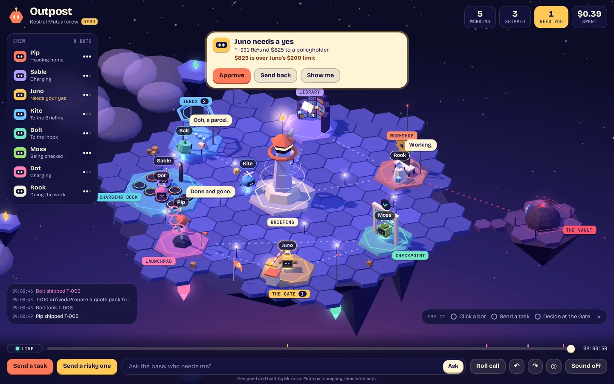
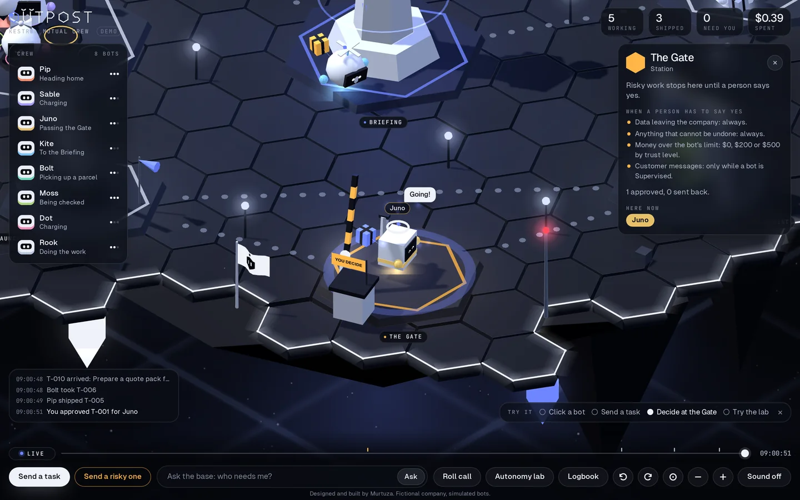
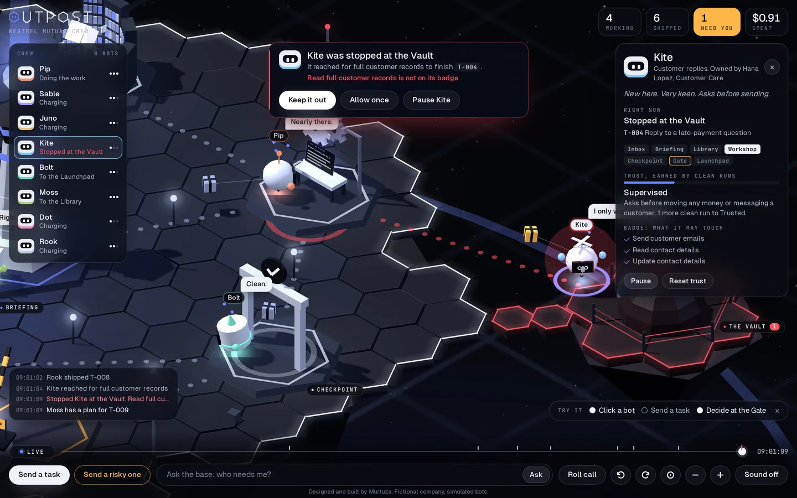
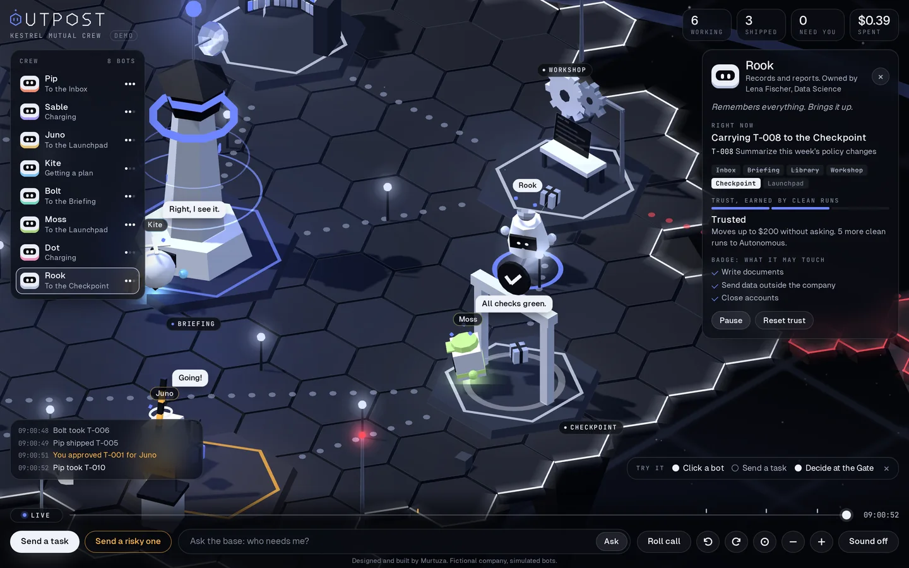
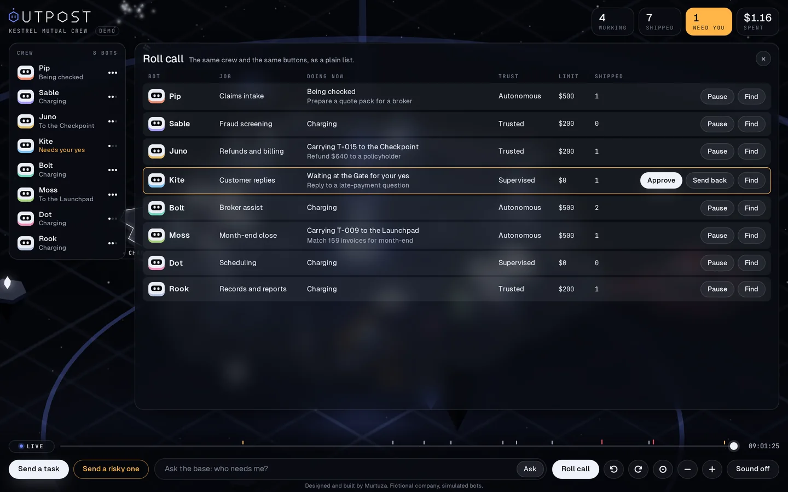
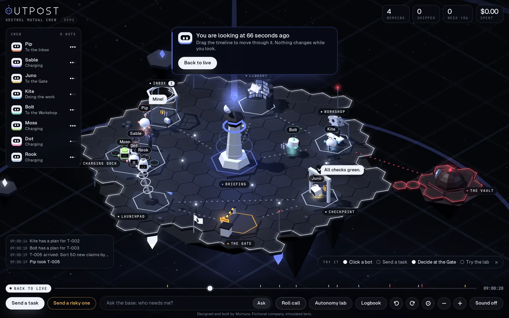

Outpost turns a team of AI agents into a place you can look at. Each bot is something you can click, where it stands tells you what it is doing, and the risky calls stop and wait for you.
I designed and built it end to end: the product idea, the rules, the simulation, the 3D base, the interface and the brand.

Companies are starting to run agents that do real work: sort claims, answer customers, move money. Managing them has become a product category of its own. Microsoft, for one, describes Agent 365 as the control plane for AI agents.
Most of these tools show agents the way software has always shown things: tables, logs and charts. That is fine for one agent. It gets hard when one person answers for a dozen, because the three things that matter most are the easiest to miss in a table:
People are good at reading a room. A factory floor, a kitchen or an airport tower can be understood at a glance because position carries meaning. I wanted to see if the same could work for agents.
So in Outpost every state is a location. A bot towing a parcel is working. A bot at the Gate needs a yes. A bot inside a red bubble at the Vault was stopped. A bot asleep on its pad has nothing to do.


In the simulation only about one task in six needs a person. So amber is reserved for one meaning, waiting on you, and nothing else on the screen is allowed to use it.
Every bot starts Supervised. Clean runs promote it to Trusted, then Autonomous, and each level raises what it may do alone. The level shows as pips circling the bot, and one click resets it.
A 3D view is good for noticing and poor for searching. Roll call shows the same crew as a plain table with the same buttons, so nobody is forced to use the scene for a job a list does better.


When a person has to say yes is decided by four fixed rules, checked in order. They are plain, tested code. No model decides any of it.
Separately, a bot can only use the tools on its badge. If it reaches for anything else it is stopped before it gets there, and the person chooses: keep it out, allow it once for this task only, or pause it.
I ran twenty simulated ten-minute shifts twice: once with a person answering at once, and once with nobody answering.
Most work never needs a person, which is the case for a quiet interface. But when nobody answers, output drops by two thirds, because a bot waiting at the Gate is a bot that is not working. The person is the bottleneck, so the product's first job is to make "who needs me?" impossible to miss.
These numbers come from a seeded simulation with made-up tasks. They show how the rules behave, not how a real company would perform.
